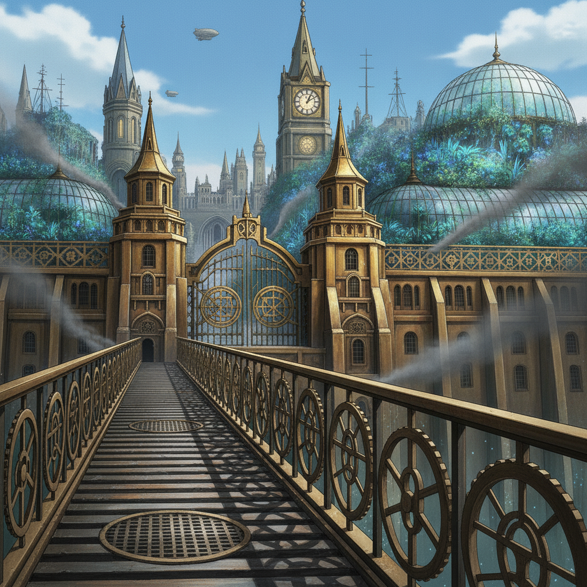
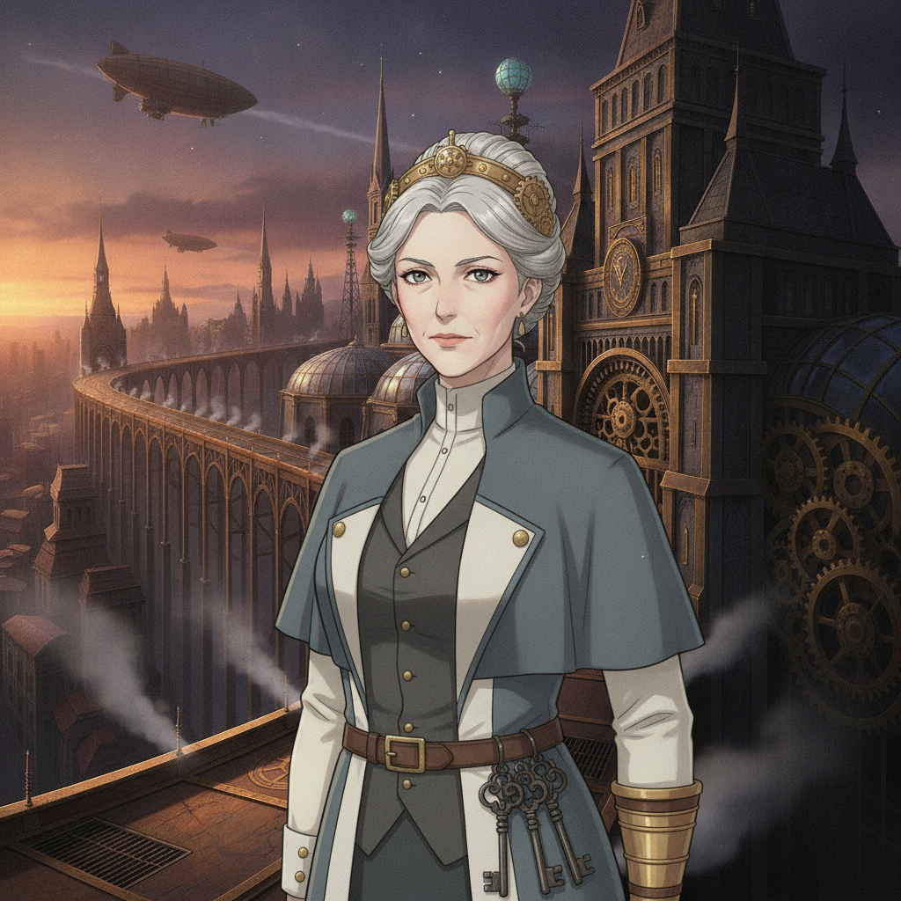
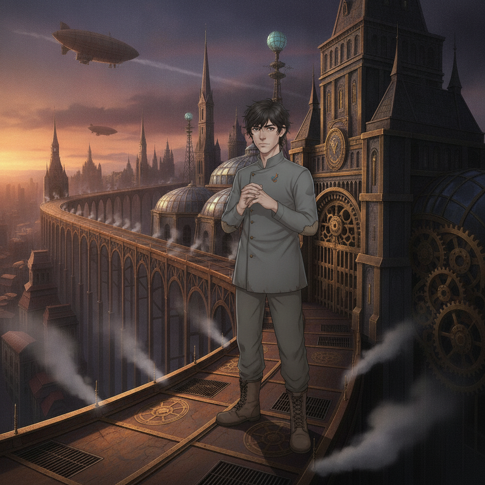

The gates of the Cog-College. Steam vents hiss beneath a viaduct of soot-dark iron, and the new intake files in under geared sigils that hum with the Weave.

Auria Coyle“Welcome, intake. You are the metered and the licensed — the talents this college has judged worth the leash.”
Auria Coyle“Understand what the leash is for. Ungoverned channeling is a crime, and the Rust is its sentence. We train you to wield the Weave — and to police those who will not.”
Across the crowd, four students stand out without trying to. Ember Kellan, a rust-bloom already on her bare forearm. Isolde Vorn, still as stone, a key-pendant at her throat. Seraphine Halcyon, ringed by envoys. Wren Ashfield, watching from the edge.

Caedon Vale“Four of them. And I haven't even unpacked.”